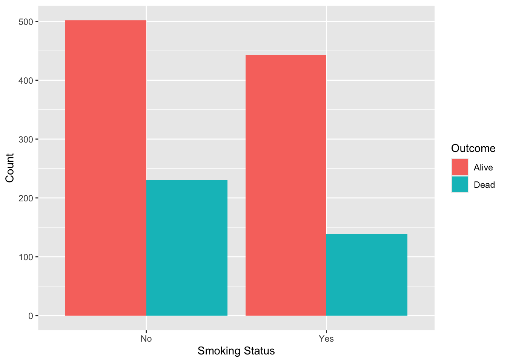
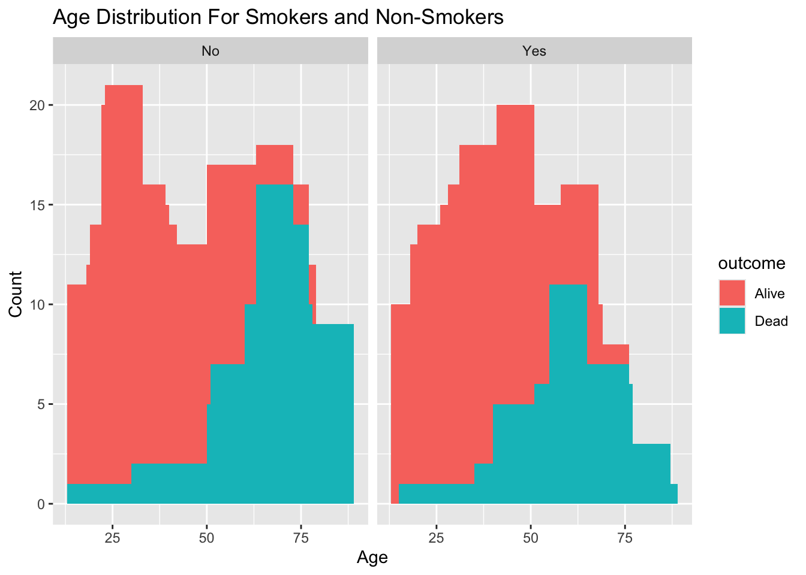
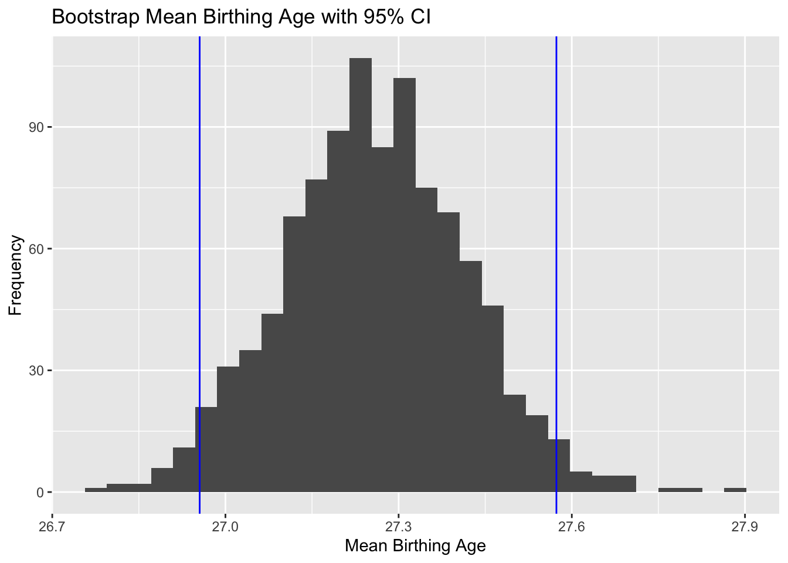

In this lab, you will work with observational data to assess the relationship between an exposure and the incidence of a disease.
You will practice bootstrap to calculate a 95%CI.
You will create an interactive web application with shiny.
Exercise 1:
The Whickham data set in the mosaicData package includes data on age, smoking, and mortality from a one-in-six survey of the electoral roll in Whickham, a mixed urban and rural district near Newcastle upon Tyne, in the United Kingdom. The survey was conducted in 1972–1974 to study heart disease and thyroid disease. A follow-up on those in the survey was conducted 20 years later. Describe the association between smoking status and mortality in this study. Be sure to consider the role of age as a possible confounding factor.
# A tibble: 4 × 3
# Groups: smoker [2]
smoker outcome n
<fct> <fct> <int>
1 No Alive 502
2 No Dead 230
3 Yes Alive 443
4 Yes Dead 139
Whickham %>%group_by(smoker, outcome) %>%summarise(count =n()) %>%ggplot(aes(x = smoker, y = count, fill = outcome)) +geom_bar(stat ="identity", position ="dodge") +labs(x ="Smoking Status", y ="Count", fill ="Outcome")

Whickham %>%ggplot(aes(x = age, fill = outcome)) +geom_bar(width =10) +facet_wrap(~ smoker) +labs(x ="Age", y ="Count", color ="Outcome", title ="Age Distribution For Smokers and Non-Smokers")

non = 732
31% passed
smokers = 582
23%
This data
Exercise 2:
Calculate the mean age of birthing people from the Gestation data set from the mosaicData package.
ggplot(data=gestation_boot, aes(x=mean_age)) +geom_histogram() +geom_vline(xintercept = ci$lower_bound, color ='blue') +geom_vline(xintercept = ci$upper_bound, color ='blue') +labs(x ="Mean Birthing Age", y ="Frequency", title ="Bootstrap Mean Birthing Age with 95% CI")

Interpretation:
We are 95% confident that the true mean age of birthing people is between 26.9554 and 27.57333 years (or 26.96 and 27.57 if we were to round)
Exercise 3:
Using data from the palmerpenguins package, create a Shiny app that displays measurements from the penguins dataframe. Allow the user to select a species or a gender, and to choose between various attributes on a scatterplot. (Hint: examples of similar apps can be found at the Shiny gallery).